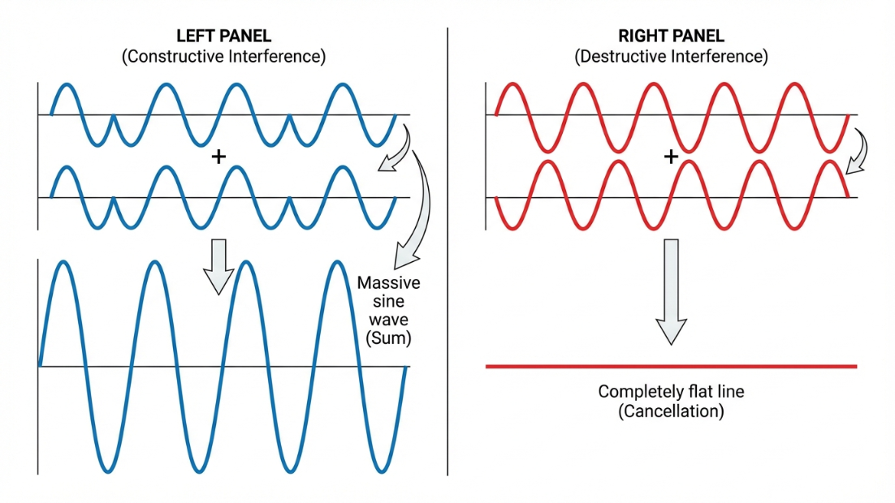

Vardaan Learning Institute
Class 11 Physics • Chapter Notes
🌐 vardaanlearning.com📞 9508841336
Module 7: Waves and their Properties
Dear Class 12 Student! Why are waves so important? In Class 12, Chapter 10 is entirely dedicated to Wave Optics (understanding light as a wave), and Chapter 7 focuses on Alternating Current (AC), which behaves exactly like a mechanical wave in its mathematics. If you master the equations of waves, phase differences, and superposition right now, you will fly through those chapters!
1. Basic Concepts of Waves
A wave is a disturbance that propagates through space and time, transferring energy and momentum from one point to another without the physical transfer of matter.
A. Transverse and Longitudinal Waves
- Transverse Waves: The particles of the medium vibrate perpendicular to the direction of wave propagation. They form crests (high points) and troughs (low points).
Example: Ripples on water, waves on a string.
- Longitudinal Waves: The particles of the medium vibrate parallel to the direction of wave propagation. They form compressions (high density) and rarefactions (low density).
Example: Sound waves in air.
B. Electromagnetic (Non-Mechanical) Waves
Mechanical waves (like sound) need a material medium to travel. Electromagnetic (EM) Waves do not. They consist of oscillating electric and magnetic fields and can travel through a perfect vacuum. Light, X-rays, and radio waves are all EM waves. They are strictly transverse in nature.
(Class 12 Preview: You will dedicate all of Chapter 8 to EM Waves!)
2. Wave Parameters and Terminology
To analyze a wave mathematically, we must define its geometric and temporal characteristics.
Definitions
- Amplitude ($A$): The maximum displacement of a particle from its mean (equilibrium) position. It determines the intensity or loudness/brightness of the wave.
- Wavelength ($\lambda$): The distance between two consecutive identical points in the same phase (e.g., crest to crest, or compression to compression).
- Time Period ($T$): The time taken to complete one full oscillation or cycle.
- Frequency ($f$ or $\nu$): The number of complete cycles or oscillations per second. $f = \frac{1}{T}$. SI unit is Hertz ($Hz$).
The Universal Wave Equation
The velocity ($v$) of a wave is the distance it travels in a given time. Since it travels a distance of one wavelength ($\lambda$) in one time period ($T$):
$$v = \frac{\lambda}{T}$$
Because $f = \frac{1}{T}$, we get the most fundamental equation of wave motion:
Formula
$$v = f \lambda$$
Note: The frequency ($f$) of a wave depends ONLY on the source. It does not change when the wave moves from one medium to another. Wavelength and velocity do change!
Practice Problem 1
Question: An FM radio station broadcasts at a frequency of $100 \text{ MHz}$ ($100 \times 10^6 \text{ Hz}$). Assuming radio waves are EM waves that travel at the speed of light ($c = 3 \times 10^8 \text{ m/s}$), what is the wavelength of these radio waves?
Solution:
Given: $f = 10^8 \text{ Hz}$, $v = 3 \times 10^8 \text{ m/s}$.
Using $v = f \lambda$
$\lambda = \frac{v}{f} = \frac{3 \times 10^8}{10^8} = \mathbf{3 \text{ meters}}$
3. Phase, Phase Difference, and Path Difference
This is the most critical concept for Class 12 Wave Optics (Young's Double Slit Experiment). Pay close attention!
- Phase ($\phi$): Represents the state of vibration of a particle at any instant. It is an angle (in radians) that tells you exactly where the particle is in its cycle.
- Phase Difference ($\Delta\phi$): The difference in phase angles between two particles, or between two waves reaching the same point.
- Path Difference ($\Delta x$): The physical difference in the distance traveled by two waves to reach the same point.
Crucial Relation
A path difference of exactly one wavelength ($\lambda$) corresponds to a phase difference of one full cycle ($2\pi$ radians). Therefore, the general relation is:
$$\Delta\phi = \frac{2\pi}{\lambda} \Delta x$$
Memorize this formula. It is the key to solving interference problems.
4. Equation of a Progressive Wave
A progressive wave travels continuously in a medium in the same direction. We use a sinusoidal function to represent it.
General Equation
For a wave traveling in the positive x-direction:
$$y(x,t) = A \sin(\omega t - kx)$$
If it travels in the negative x-direction, the sign changes:
$$y(x,t) = A \sin(\omega t + kx)$$
Let's break down the new symbols:
- $y(x,t)$: Displacement of the particle at position $x$ at time $t$.
- $\omega$: Angular Frequency. $\omega = \frac{2\pi}{T} = 2\pi f$. (Unit: rad/s)
- $k$: Angular Wave Number. $k = \frac{2\pi}{\lambda}$. (Unit: rad/m)
Notice that wave velocity can also be written as: $v = \frac{\omega}{k}$.
Practice Problem 2
Question: The equation of a transverse wave is given by $y = 5 \sin(100\pi t - 0.4\pi x)$, where $x$ and $y$ are in meters and $t$ is in seconds. Find the amplitude, frequency, wavelength, and wave velocity.
Solution:
Compare the given equation with standard form: $y = A \sin(\omega t - kx)$
1. Amplitude ($A$): Direct comparison gives $\mathbf{A = 5 \text{ m}}$.
2. Angular Frequency ($\omega$): $\omega = 100\pi$.
Since $\omega = 2\pi f \implies 2\pi f = 100\pi \implies \mathbf{f = 50 \text{ Hz}}$.
3. Wave Number ($k$): $k = 0.4\pi$.
Since $k = \frac{2\pi}{\lambda} \implies \frac{2\pi}{\lambda} = 0.4\pi \implies \lambda = \frac{2}{0.4} = \mathbf{5 \text{ m}}$.
4. Velocity ($v$): $v = f \lambda = 50 \times 5 = \mathbf{250 \text{ m/s}}$.
*(Alternatively, $v = \frac{\omega}{k} = \frac{100\pi}{0.4\pi} = 250 \text{ m/s}$)*
5. Superposition and Interference
When two or more waves arrive at the same point simultaneously, what happens? They don't bounce off each other; they pass right through, adding their displacements together.
Principle of Superposition
"The resultant displacement of a particle at any instant is the vector sum of the displacements caused by the individual waves at that instant."
$$\vec{y}_{net} = \vec{y}_1 + \vec{y}_2 + \dots$$
Interference

Constructive Interference (Maximum Intensity):
Occurs when crest falls on crest and trough on trough. The waves are "In Phase".
Phase Difference: $\Delta\phi = 0, 2\pi, 4\pi, \dots = 2n\pi$
Path Difference: $\Delta x = 0, \lambda, 2\lambda, \dots = \mathbf{n\lambda}$
Destructive Interference (Minimum Intensity):
Occurs when crest falls on trough. The waves are "Out of Phase" and cancel each other out.
Phase Difference: $\Delta\phi = \pi, 3\pi, 5\pi, \dots = (2n-1)\pi$
Path Difference: $\Delta x = \frac{\lambda}{2}, \frac{3\lambda}{2}, \dots = \mathbf{(n - \frac{1}{2})\lambda}$
Practice Problem 3
Question: Two sound waves of wavelength $2 \text{ m}$ reach a listener. The first wave travels $10 \text{ m}$ to reach the listener, while the second travels $13 \text{ m}$. Will the listener hear a loud sound (constructive) or no sound (destructive)?
Solution:
1. Find the path difference ($\Delta x$):
$\Delta x = x_2 - x_1 = 13 \text{ m} - 10 \text{ m} = 3 \text{ m}$.
2. Relate $\Delta x$ to wavelength ($\lambda = 2 \text{ m}$):
$\Delta x = 3 = 1.5 \times 2 = 1.5 \lambda$
Notice that $1.5 \lambda = \frac{3\lambda}{2}$.
3. Conclusion:
Since the path difference is an odd half-multiple of the wavelength, the waves arrive perfectly out of phase. This results in Destructive Interference. The listener will hear almost no sound.